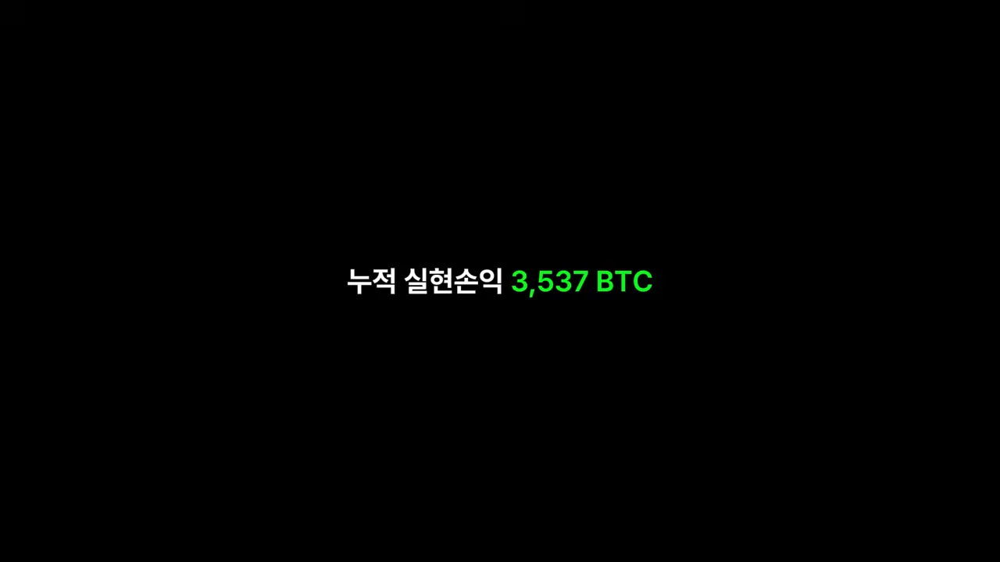
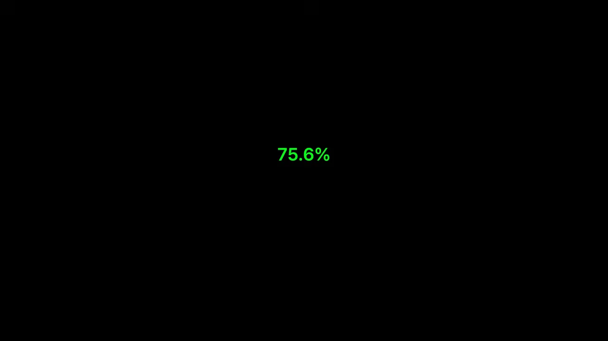
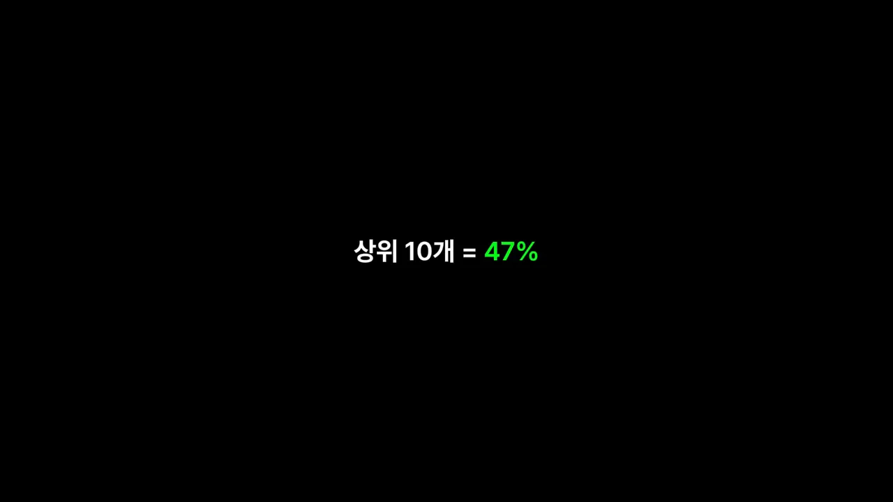
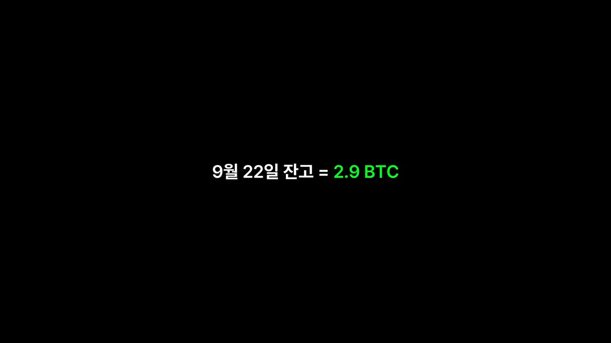
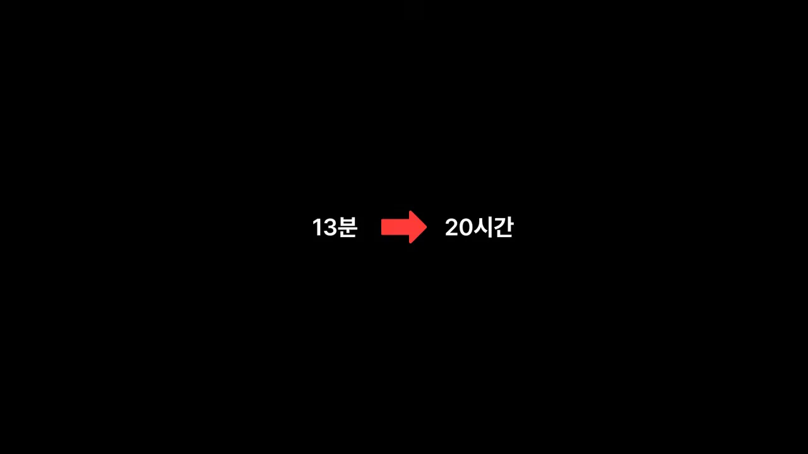
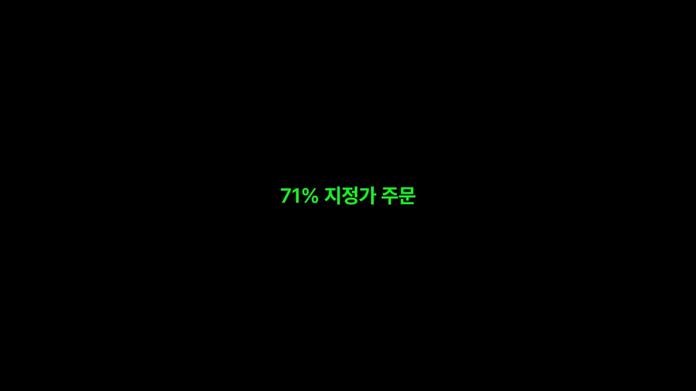
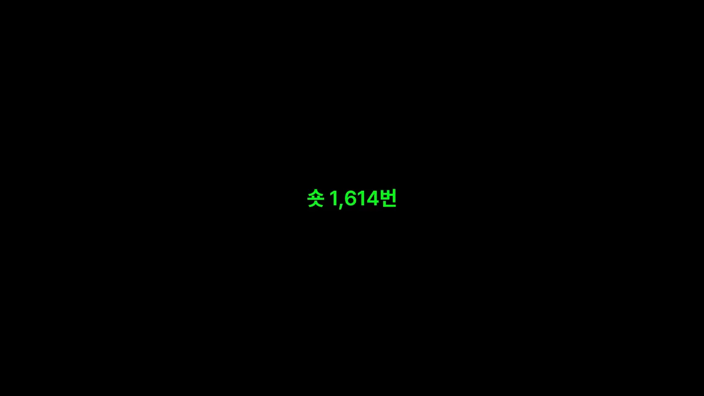

공개된 기록이 맞는지부터 확인했어요
워뇨띠가 공개한 건 2018년 3월부터 2021년 12월까지, 비트멕스 계좌 하나의 체결 기록 전체예요. 압축을 풀면 600MB, 140만 줄이 넘어요. 엑셀로는 열리지도 않아서 발표자는 코드로 체결을 하나씩 이어 붙였어요.
포지션을 세는 기준은 단순해요. 보유 수량이 0에서 시작해 다시 0으로 돌아오면 한 판으로 쳤어요. 이렇게 복원한 숫자를 워뇨띠 본인이 밝힌 숫자와 나란히 놓으면 이래요.
| 항목 | 본인이 밝힌 숫자 | 기록으로 다시 센 숫자 |
|---|---|---|
| 포지션 수 | 약 3,200번 | 3,184개 |
| 주문 수 | 약 2만 3천 번 | 23,417개 |
| 누적 실현손익 | 3,537 BTC | 3,537.3 BTC (포지션 손익 + 펀딩비) |
화면에도 이 숫자가 한 장씩 지나가요. 아래는 본인이 밝힌 누적 실현손익 3,537 BTC를 띄운 장면이에요. 기록으로 다시 더한 값은 지갑 기록과 소수점 첫째 자리까지 같았어요.

넣은 돈보다 뺀 돈이 훨씬 많아요
첫 입금은 2018년 3월 5일 0.17 BTC로, 당시 시세로 약 200만 원이에요. 열흘 동안 몇 번 더 넣어 합계가 600만 원대가 되니 '600만 원으로 시작했다'는 이야기와 얼추 맞아요. 전체로는 18번, 14.5 BTC를 넣었어요.
그런데 넣었다 뺐다를 계속했기 때문에 순입금(입금 − 출금)으로 보면 가장 많을 때도 2.34 BTC, 약 2,000만 원이었어요. 흐름을 순서대로 보면 이래요.
- 2018년 4월 25일, 시작 두 달도 안 돼 처음으로 뺀 돈이 넣은 돈보다 많아져요.
- 5월에 3.5 BTC를 다시 넣어 잠깐 뒤집혔지만, 7월 말부터는 한 번도 역전되지 않아요.
- 마지막 입금은 2018년 11월이에요. 그 뒤 3년은 출금만 있어요.
- 출금 합계는 2,815 BTC로, 뺄 당시 시세로 약 9천만 달러(약 1,000억 원)예요.
- 잔고가 가장 많았던 날은 2021년 6월 19일, 1,531 BTC(약 630억 원)예요.
사실상 번 돈으로 매매를 이어 갔다는 뜻이에요. 다만 이 숫자는 모두 비트멕스 계좌 하나 기준이에요.
승률 75%의 속사정
3,184판 중 이긴 판은 75.6%예요. 네 판 중 세 판을 이긴 셈이라, 여기까지만 보면 역시 고수라는 생각이 들어요.

하지만 판당 크기를 보면 그림이 달라져요. 아래 그림 위쪽에서 초록 막대(이긴 판 평균 3.3 BTC)가 빨간 막대(진 판 평균 6 BTC)의 절반 남짓이에요. 손익비가 0.56이라, 잃을 때 두 배 가까이 크게 잃었어요. 아래쪽은 들고 있던 시간이에요. 진 판을 이긴 판보다 두 배쯤 오래 들고 있었어요.
흔히 초보에게 하지 말라는 '물린 거 버티기'를 이 사람은 계속했다는 거예요. 그럼 3,500 BTC는 어디서 나왔을까요?
돈은 50판에서 나왔어요
수익이 큰 순서로 포지션을 줄 세우면 답이 나와요. 화면은 '상위 10개 = 47%'처럼 한 줄씩 보여 줘요.

화면에 차례로 나온 숫자를 한 그림에 모았어요. 점선이 순이익 100%예요. 상위 38판에서 이미 점선을 넘고, 상위 50판은 115%까지 가요.
가장 많이 번 세 판은 이래요.
| 순위 | 시기 | 방향 | 수익 |
|---|---|---|---|
| 1등 | 2021년 6월 18일 진입 | 비트코인 롱 | 246 BTC |
| 2등 | 2021년 6월 | 비트코인 숏 | 232 BTC |
| 3등 | 2021년 8월 | 비트코인 롱 | 180 BTC |
1등 포지션은 80일 가까이 들고 있었고, 그동안 25,000번 넘게 체결을 쪼개 넣고 뺐어요. 한 판이라도 한 번에 사고판 게 아니에요.
발표자는 손익비와 이 결과를 합쳐 이렇게 해석해요. 평소에는 잘게 벌고 잘게 잃다가 가끔 크게 물리기도 하지만, 1년에 몇 번 오는 큰 추세에서 계좌 전체로 크게 먹는다는 거예요. 나머지 3,000판은 그 몇 판이 올 때까지 시장에 붙어 감을 유지하는 비용이라고 봤어요.
2018년, 17일 만에 90%를 잃다
지금은 신처럼 여겨지지만, 2018년 기록만 보면 워뇨띠는 레버리지를 크게 쓰는 투기꾼에 가까웠어요. 발표자가 레버리지를 어떻게 셌는지부터 볼게요. 포지션 크기를 그때 계좌 잔고로 나눈 값이에요.
| 2018년 지표 | 값 |
|---|---|
| 레버리지 중앙값 | 2.6배 |
| 10배 넘는 포지션 비율 | 13% |
| 강제 청산 횟수 | 24번 (40배 넘는 포지션도 있었어요) |
| 보유 시간 중앙값 | 13분 — 거의 스캘핑 |
9월, 17일 동안 생긴 일
그리고 2018년 9월이 왔어요. 일은 세 번에 걸쳐 터졌어요.
- 9월 5일 잔고는 30 BTC였어요. 비트코인이 크게 빠진 날 11배짜리 롱을 들고 있다가 하루 만에 18 BTC가 됐어요.
- 14일에는 이더리움 숏이 강제 청산됐어요.
- 21일 리플이 하루 만에 크게 오르자 숏을 쳤어요. 물리고, 또 숏을 치고, 또 물리다 결국 강제 청산까지 당해 그날만 15 BTC를 잃었어요.
화면은 그 결과를 한 줄로 보여 줘요. 9월 22일 잔고가 2.9 BTC예요.

워뇨띠는 다음 날 0.64 BTC를 넣고 다시 시작했어요. 월별 수익률은 10월 +83%, 11월 +473%, 12월 +111%였어요. 11월은 비트코인이 6,300달러에서 4,000달러 밑으로 무너진 달인데, 이 하락을 숏으로 받아먹었어요. 아래 그림은 잔고만 따로 그렸어요. 맨 오른쪽 막대가 연말 잔고 120 BTC예요. 그 사이 61 BTC를 빼 갔는데도 이만큼 남았어요.
배율을 낮추자 달라진 것
2018년 9월 이후 무엇이 달라졌는지 연도별로 보면 뚜렷해요. 아래 그림 (a)는 레버리지 중앙값이에요. 2.6배에서 0.6배까지 해마다 내려가요. (b)는 포지션을 들고 있던 시간인데, 13분에서 20시간으로 늘어요. 두 그림에서 같은 색은 같은 해예요.
화면도 보유 시간 변화를 화살표 하나로 보여 줘요.

매매 횟수와 수익을 같이 놓으면 더 놀라워요.
| 2018년 | 2021년 | |
|---|---|---|
| 포지션 수 | 2,201번 | 216번 |
| 전체 수익 중 그해 몫 | 6% | 57% |
| 강제 청산 | 24번 | 사실상 0번 |
2019~2021년 강제 청산은 2020년 3월 코로나 폭락 때 작은 것 하나뿐이었어요. 덜 할수록, 낮은 배율일수록, 오래 들고 있을수록 더 벌었어요. 워뇨띠가 오래전부터 입버릇처럼 말해 온 '저배율 격리'도 처음부터 그랬던 게 아니에요. 발표자는 2018년 9월을 겪고 나서 생긴 습관이라고 봐요.
저배율이어도 맞는 날은 있어요
2021년 5월 19일, 비트코인이 장중 30% 넘게 빠진 날이에요. 워뇨띠는 떨어지는 중에 비트코인과 이더리움 롱을 잡았고, 반나절 만에 둘 다 손절했어요. 하루에 282 BTC, 그날 시세로 약 110억 원이 사라졌어요. 잔고의 44%예요. 그 뒤 일주일은 이렇게 흘러가요.
flowchart LR A["5월 19일
롱 손절 −282 BTC
(잔고 −44%)"] --> B["이틀 뒤
이더리움 롱 +134 BTC"] B --> C["이어서
이더리움 숏 +140 BTC"] C --> D["폭락 7일 뒤
잔고가 폭락 전보다 많음"]
주문 습관과 세 가지 교훈
발표자는 기록에서 눈에 띈 습관 세 가지를 빠르게 짚어요.
- 스탑로스를 거의 안 썼어요. 스탑 주문이 한 번이라도 체결된 포지션이 전체의 1.4%뿐이에요. 손절도 익절도 손으로 했다는 뜻이에요.
- 거래 대금의 71%가 지정가 주문이었어요. 비트멕스는 지정가 주문에 수수료를 돌려줬어요.
- 롱과 숏이 거의 반반이었어요. 롱 1,570번, 숏 1,614번이에요.

지정가를 많이 쓴 효과는 수수료에서 드러나요. 아래 그림에서 오른쪽(초록)은 받은 돈, 왼쪽(빨강)은 낸 돈이에요. 4년 거래 대금이 280억 달러인데, 리베이트 298 BTC가 시장가 수수료 376 BTC를 대부분 상쇄해 실제로 낸 수수료는 78 BTC였어요. 펀딩비로는 오히려 150 BTC를 받아, 수수료를 내고도 남았어요.
롱과 숏 이야기도 의외예요. 비트코인이 1만 1천 달러에서 4만 6천 달러까지 오른 4년인데, 화면이 보여 주듯 숏으로 번 돈이 롱보다 많았어요. 시장이 좋아서 벌었다고만 볼 수 없다는 뜻이에요.

발표자가 꼽은 세 가지
- 승률은 결과지 비결이 아니에요. 75%를 이겨도 손익비는 0.56이에요. 원칙대로 했으면 이만큼 못 벌었을 수도 있고, 원칙을 어기고도 버틴 건 이 사람이라서 가능했을 거라고 봐요.
- 돈은 몇 판에서 나와요. 3,184판 중 38판이 순이익의 대부분이에요. 나머지 판에서 할 일은 크게 먹는 게 아니라 죽지 않는 거예요.
- 죽지 않는 방법은 레버리지였어요. 2.6배에서 0.6배로 내린 뒤 강제 청산이 사라졌고, 하루에 44%를 잃어도 일주일 만에 회복했어요.
워뇨띠와 개미들의 차이는, 거기서 배율을 내렸냐 안 내렸냐 일지도 모르겠습니다
— 영상 08:20
함께 올라온 '90일 서한'과 분석의 한계
워뇨띠는 거래 기록과 함께 '90일 서한'도 올렸어요. 비트코인 적정가를 8만 5천 달러로 보고, 연말까지 코인은 상승, 나스닥은 완만한 상승, 코스피는 좁은 박스권이라고 전망했어요. 본인이 전망을 기록해 두고 나중에 검증하겠다는 취지라, 발표자도 연말에 맞았는지 확인해 보겠다고 했어요.